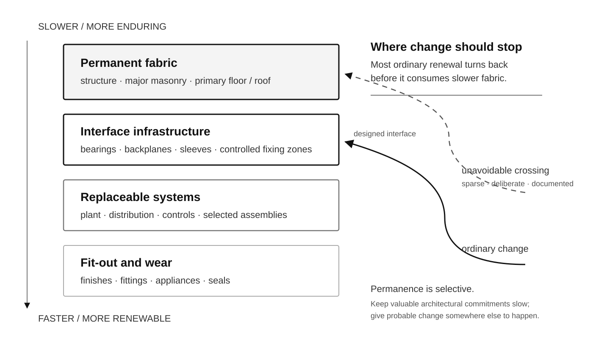

This bounded proof places the actual reader-facing figure inside prose rather than promoting it to a plate. The diagram must remain subordinate to the argument while its own labels stay physically legible.

The figure remains an abstract explanatory instrument. It does not claim a literal wall section, service topology or universal lifetime model.
Proof target: fixed 128 mm figure width at current A4 margins and ISO B5 (176 × 250 mm) as the conservative smaller-than-A4 robustness surface. B5 is not selected as the final PR-02 trim.
This proof keeps the abstract functional decomposition inside prose. It must explain duties without pretending to be a construction detail.
The diagram remains a functional schedule between two assemblies, not a universal joint or technical build-up.
Proof target: fixed 128 mm figure width at current A4 margins and conservative ISO B5, with the same paper-space label and note roles as the accepted early-FLOW family.